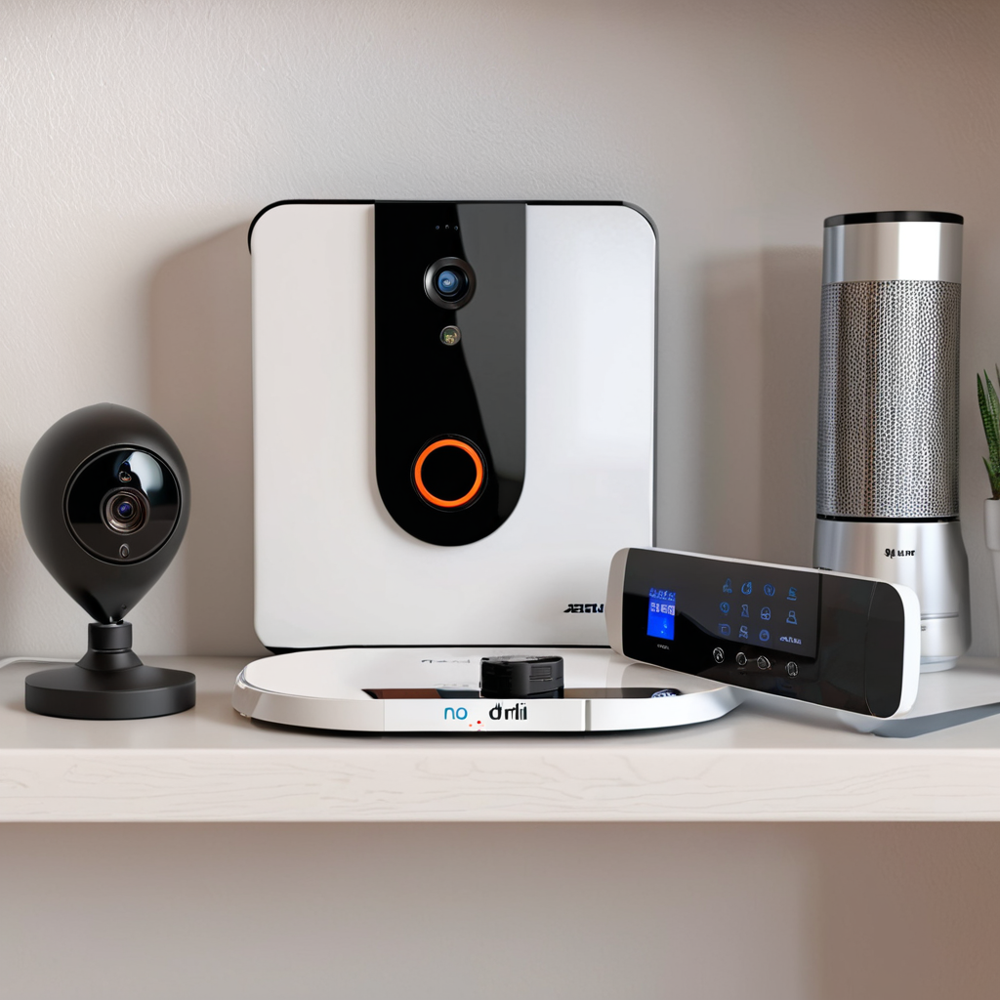
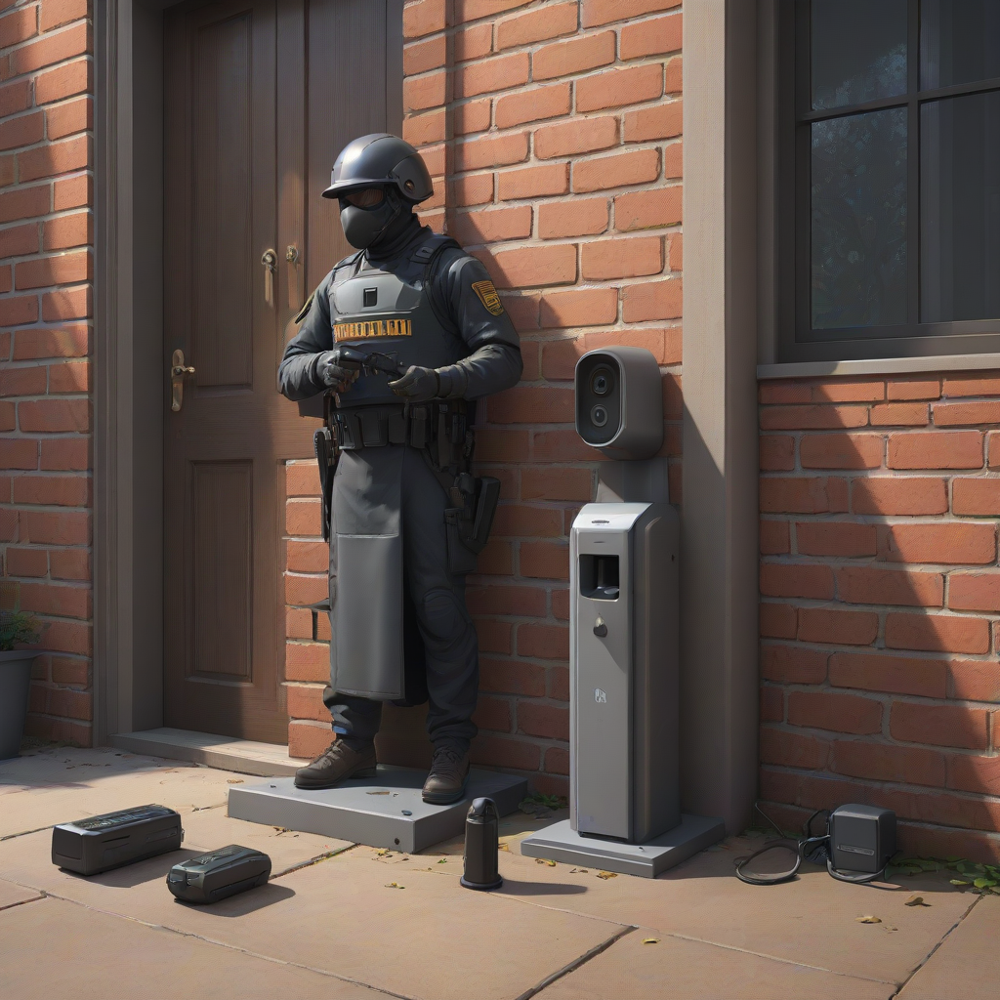
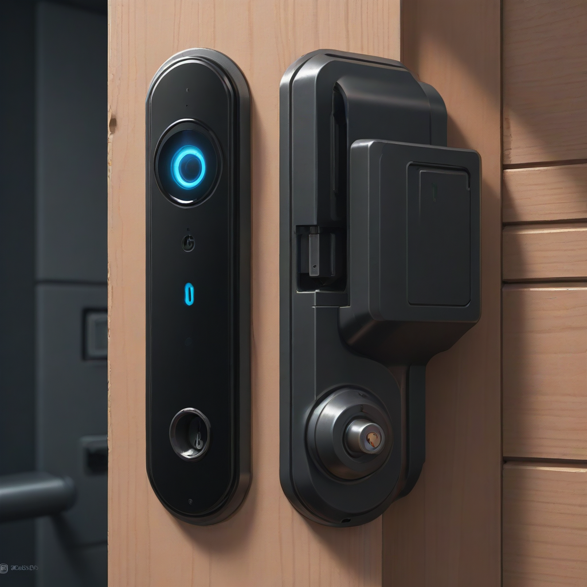

In an era where flexibility defines modern living, securing your home shouldn't require a drill or a permission slip from your landlord. Whether you are renting an apartment, living in a condo with HOA restrictions, or simply prefer a non-invasive setup, the need for reliable protection remains constant. This is where a no drill home security system becomes essential. It bridges the gap between maintaining a pristine property and ensuring the safety of your family and valuables.
Traditional alarm systems often demand hardwired connections and permanent mounting, which can lead to hefty security deposit deductions upon moving out. However, technology has evolved significantly. Today, high-definition cameras, smart door sensors, and motion detectors can function independently with powerful battery life and industrial-strength adhesive. This guide explores the best renter friendly alarm systems available in 2026, providing actionable advice on how to achieve robust security without drilling holes.
We will break down the top technologies, compare leading products, and offer installation tips to ensure your temporary home security devices stay put during a storm or an attempted break-in. Our goal is to provide you with a safety-focused, budget-conscious roadmap to protecting your space while respecting your lease agreement.
Understanding No Drill Home Security Technology

Before investing in hardware, it is crucial to understand how security without drilling holes works effectively. In the past, wireless systems were often treated as temporary stopgaps with lower reliability. Today, the industry standard has shifted. Modern devices utilize advanced wireless protocols like Z-Wave, Zigbee, and Wi-Fi 6 to communicate with a central hub or directly to your smartphone.
The mounting technology is equally advanced. Manufacturers now utilize high-tack adhesive pads, similar to those used in automotive applications. Some systems use magnetic mounts where the base is glued to a metal surface, allowing the camera to be removed and reattached easily. Others utilize 3M VHB (Very High Bond) tape or Command-style strips that leave no residue upon removal if done correctly. These methods ensure that your wireless security cameras for apartments remain stable enough to withstand wind, minor tampering, and daily vibrations.
Power is the other critical component. Since there are no holes for wires, these devices rely on long-lasting rechargeable batteries or solar panels.

Top Types of No Drill Security Devices
When building a comprehensive security perimeter without tools, you need a mix of detection, deterrence, and recording. Here are the primary categories of devices you should consider for your setup.
Adhesive Door and Window Sensors
These are the backbone of any no drill home security system. They consist of two parts: a magnet and a sensor. When the door or window opens, the connection breaks, triggering an alarm. Most modern versions use battery-powered adhesive backing. They are incredibly discreet and effective for perimeter security.
- Function: Detects entry points via magnetic contact separation.
- Mounting: Double-sided adhesive tape or peel-and-stick pads.
- Best For: Front doors, sliding glass doors, and ground-floor windows.
Wireless Security Cameras for Apartments
Cameras provide visual verification, which is vital for insurance claims and police reports. Battery-powered cameras with adhesive mounts are designed to be placed on shelves, ceilings, or flat walls. They often feature motion detection that sends alerts to your phone immediately.
- Function: Records video and sends real-time alerts.
- Mounting: Screwless mounts or adhesive stands.
- Best For: Living rooms, nurseries, and entryways.
Portable Security Sirens
While a camera records the event, a siren stops it. Portable sirens can be placed on top of bookshelves or hung from curtain rods using tension rods. They emit a loud noise (100+ decibels) when motion is detected or a sensor is tripped.
- Function: Audible deterrent and notification.
- Mounting: Freestanding or hanging.
- Best For: Supplementing cameras and sensors.
Top No Drill Security Systems Comparison (2026)
Choosing the right hardware can be overwhelming. We have analyzed the market leaders to bring you a comparison of the top renter friendly alarm systems available this year. Focus on battery life, adhesive quality, and smart home integration.
| System Name | Mounting Type | Power Source | Approx. Price | Best Feature |
|---|---|---|---|---|
| Ring Stick Up Cam Battery | Adhesive Mount & Screwless | Rechargeable Battery | $100 (Camera) | Ecosystem Integration |
| SimpliSafe Wireless Kit | Adhesive Sensor Pads | Long-Life Batteries | $250 (Starter Kit) | Professional Monitoring |
| Arlo Ultra 2 | Adhesive & Magnetic | Battery + Solar | $150 (Camera) | 4K Video Quality |
| Wyze Cam v4 | Magnetic Mount | Wired or Battery | $35 (Camera) | Budget Friendly |
| Google Nest Doorbell (Wired/Battery) | Adhesive Mount | Battery or Hardwired | $180 | Facial Recognition |
As you can see, the market offers options for every budget. The Ring Stick Up Cam is excellent for those already in the Amazon ecosystem, while SimpliSafe offers the most robust professional monitoring without needing a drill. The Arlo Ultra 2 stands out for video clarity, though it comes at a higher price point. When reviewing these temporary home security devices, consider that subscription costs for cloud storage can add up over time.
Installation Tips for Adhesive Security Mounts
Even the best no drill home security system will fail if installed incorrectly. Adhesive technology is powerful, but it is sensitive to surface conditions and environmental factors. Follow these steps to ensure your cameras and sensors stay secure.
Surface Preparation
Cleanliness is non-negotiable. Dust, oil, and paint residue are the enemies of strong adhesion. Before applying any adhesive mount, wipe the surface with isopropyl alcohol and let it dry completely. Avoid textured walls if possible, as flat surfaces provide the best bond. If you must install on drywall, ensure the paint is not peeling.
Temperature and Curing
Most adhesive pads require a specific temperature range to bond correctly, typically between 50°F and 100°F. Apply the device during a warm part of the day. After mounting, apply firm pressure for at least 30 seconds. Crucially, allow the adhesive to cure for 24 hours before relying on the security device. This waiting period ensures the chemical bond reaches maximum strength.
Strategic Placement
Placement affects both security and adhesion. Do not mount devices in direct sunlight if possible, as UV radiation can degrade adhesive pads over time. Also, avoid areas with high vibration, such as near washing machines or exterior doors that slam frequently. If you need to mount on a non-porous surface like glass or metal, ensure you use the specific adhesive strips recommended by the manufacturer.
Pros and Cons of No Drill Security Systems
Before you purchase, it is important to weigh the advantages against the limitations. While security without drilling holes offers immense flexibility, it is not a perfect solution for every scenario.
Advantages
- Lease Friendly: You avoid security deposit deductions for wall damage.
- Portability: You can take the system with you if you move to a new apartment.
- Easy Installation: No tools or electricians required; setup takes minutes.
- Customizable: You can move sensors to cover vulnerable areas as needed.
Disadvantages
- Adhesive Failure: Over years, adhesive may weaken in extreme climates.
- Battery Maintenance: You must remember to recharge or replace batteries regularly.
- Tamper Resistance: It is easier for an intruder to rip off a no-drill camera than a hardwired one.
- Weight Limits: Heavy devices may require supplemental support.
Frequently Asked Questions
Homeowners and renters often have specific concerns regarding wireless setups. Here are answers to the most common questions about adhesive door alarm sensors and wireless cameras.
Will a no drill security system work if I move?
Yes, one of the primary benefits of these systems is portability. Unlike hardwired alarms that are built into the house, a no drill home security system is owned by you. When you move, you can carefully remove the adhesive mounts (often by using a flossing motion with fishing line) and reinstall them in your new location. Just remember to check your lease regarding the condition of the walls upon removal.
How effective are adhesive mounts against a break-in?
While an intruder can rip off a camera, they cannot easily bypass the alarm it sends. The goal of the security system is detection and deterrence. If an intruder spends time removing a camera, the motion sensor or door contact triggers the alarm and notifies you. For added security, place the camera out of direct reach, such as high on a wall or inside a corner.
Do I need a monthly subscription?
Not necessarily. Many wireless security cameras for apartments offer local storage via SD cards or free basic alerts. However, for professional monitoring (where police are called automatically) or cloud video history, a subscription is usually required. Brands like SimpliSafe and Ring offer tiered plans ranging from $3 to $30 per month depending on the features you need.
Can I mix different brands in one system?
You can, but it complicates management. Using a central hub like a Google Home or Amazon Echo allows you to integrate different devices. However, for a seamless experience, it is often better to stick to one ecosystem. This ensures your temporary home security devices communicate reliably without compatibility issues.
How long do the batteries last?
Battery life varies by usage. A door sensor might last 2 to 3 years on a single battery, while a camera recording video frequently may need charging every 1 to 3 months. Always check the manufacturer's specifications. Some systems offer solar charging options, which can make the battery virtually indefinite if placed in sunlight.
Conclusion
Securing your home does not have to mean damaging your property. With the right no drill home security system, you can achieve peace of mind, protect your valuables, and maintain a good relationship with your landlord. The key is selecting high-quality devices with reliable adhesive technology and understanding the maintenance requirements of battery-powered units.
Start by assessing your vulnerabilities. Identify your main entry points and consider using adhesive door alarm sensors for the perimeter and a wireless camera for the main living area. Review the comparison table above to find a budget that works for you, and ensure you follow the installation tips to guarantee longevity.
Remember, security is about layers. A no-drill system is a powerful layer, but it works best when combined with smart habits like locking doors and using smart locks. If you want to explore more options, check out our guide on best wireless security cameras or our review of comprehensive home alarm systems for further reading. Stay safe, stay smart, and protect your space without the hassle.